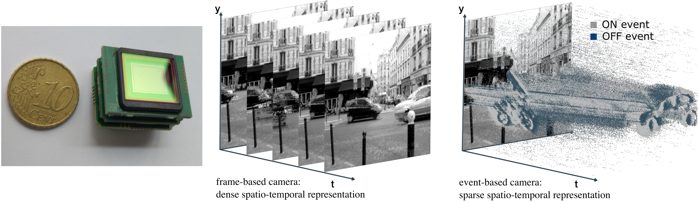
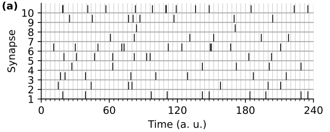
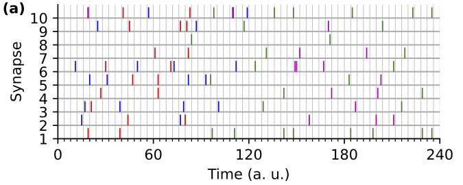
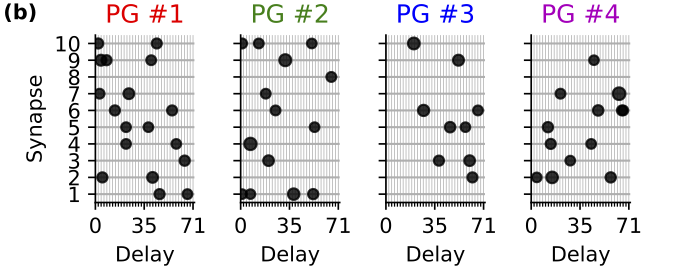
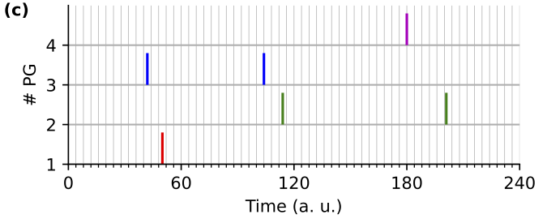
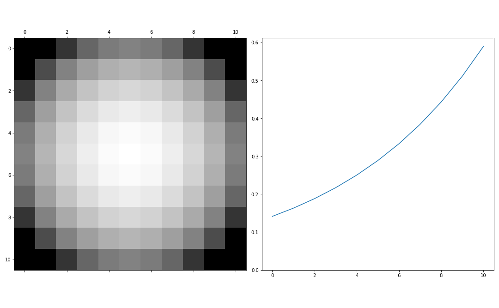
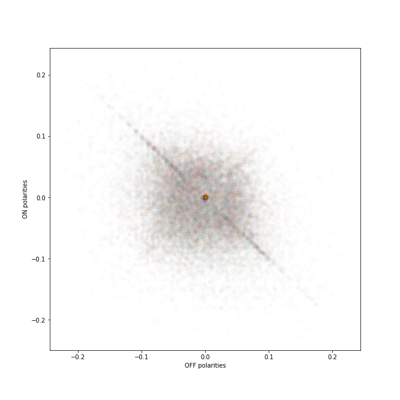
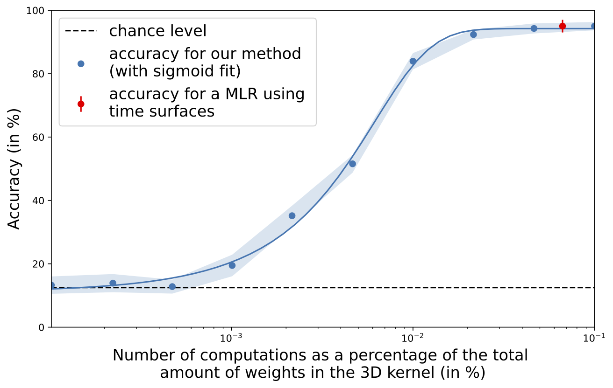

|
Decoding spiking motifs using neurons with heterogeneous delays
[2022-07-01] AREADNE 2022 conference |
|---|
Spiking Neural Networks





supervised learning
Learned heterogeneous weights



Frugal computing

Questions?
Ask info @ laurent.perrinet@univ-amu.fr
More info @ web-site